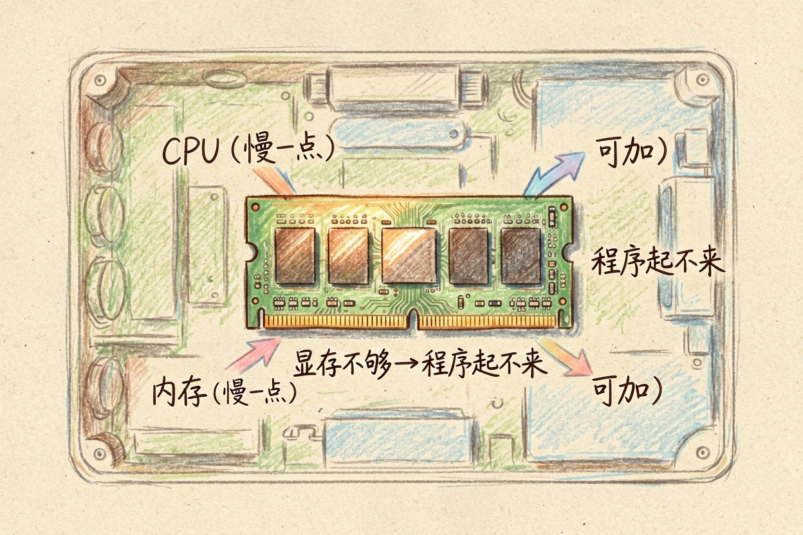
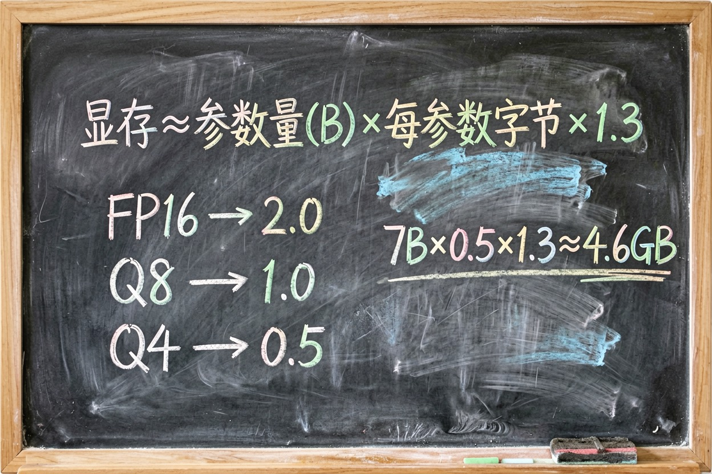
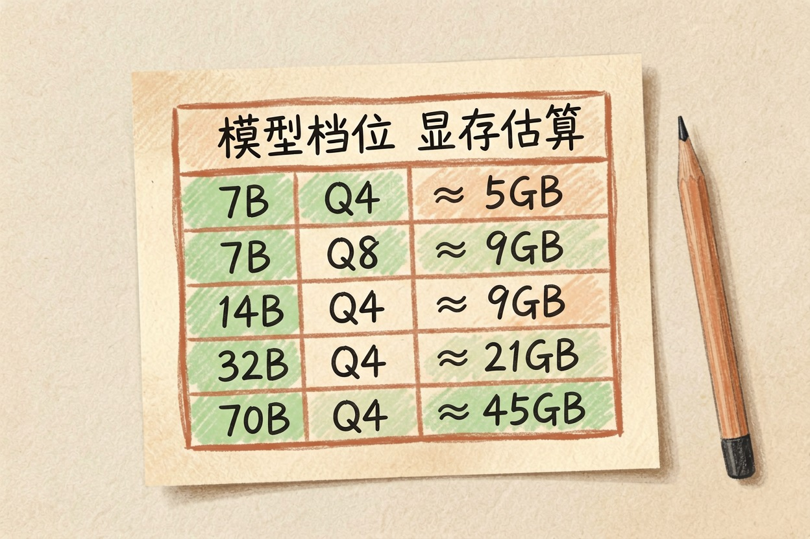
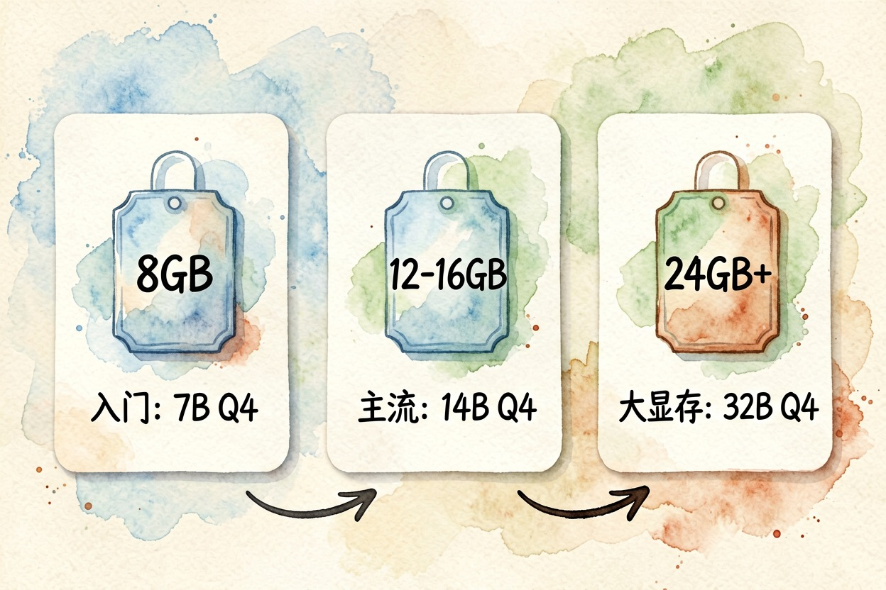
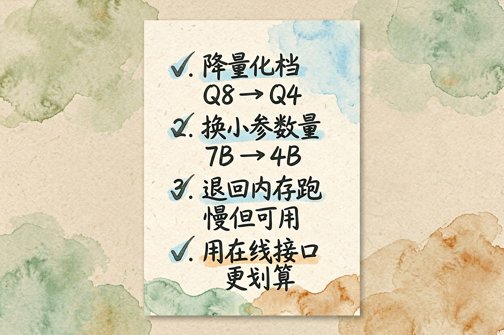

本地跑大模型要什么配置？显存怎么估算 — Learntide
能不能带动，主要看显卡上那点显存。按参数量和量化档粗估占用，再留一截余量，答案就出来了。
本地跑大模型配置要求，先看显存这一项

本地跑大模型配置要求听着复杂，真正卡人的只有一项：显存。CPU 慢一点无非等久些，内存不够可以加，显存装不下模型，程序直接起不来。
所以判断一台机器行不行，顺序很清楚。先看显存够不够装下你想跑的档位，再看带宽够不够让它跑得不难受，最后才轮到 CPU 和内存。
集成显卡和苹果的统一内存是另一套逻辑，它们和内存共享一块池子，看的是总容量。
内存也别完全不管。模型加载时会先过一遍内存，内存太小容易卡在加载这一步。一般留出比显存更大的余量就够。
大模型显存怎么算：一个够用的估算式

大模型显存怎么算，不需要精确公式，粗算就够做决策。
显存占用 ≈ 参数量 × 每个参数占的字节数，再往上留两三成余量。每参数占多少字节，取决于量化档。
显存 ≈ 参数量(B) × 每参数字节 × 1.3
FP16 → 2.0 字节/参数
Q8 → 1.0 字节/参数
Q4 → 0.5 字节/参数
例：7B 模型跑 Q4
7 × 0.5 × 1.3 ≈ 4.6 GB那三成余量是给什么的？给对话历史的缓存、给推理框架自身的开销。对话越长，这部分吃得越多。只按参数算，聊到一半爆显存是常事。
7B 模型要多少显存：常见档位对照

7B 模型要多少显存，套上面的式子就有答案。
7B Q4 ≈ 5 GB 入门卡就能跑
7B Q8 ≈ 9 GB 主流卡舒服
14B Q4 ≈ 9 GB 主流卡舒服
32B Q4 ≈ 21 GB 需要大显存卡
70B Q4 ≈ 45 GB 单卡基本不用想数字是粗估，实际会有出入，不同框架的开销不一样。但用来判断「我这张卡能不能带动」，精度足够了。
还有一点容易忽略：同样是 7B，不同模型的实际占用会差个一两 GB。词表大小、结构设计都会影响。所以留余量这一步不能省。
结论也很直白。8 GB 显存对应 7B 的 Q4，12 到 16 GB 能舒服跑 14B，24 GB 才摸得到 32B 的门槛。
跑大模型需要什么显卡：按显存分三档

跑大模型需要什么显卡，别看型号名，直接看显存数字。
8 GB 档：能跑 7B 的 Q4，速度尚可，日常改写、翻译、整理格式够用。这是最便宜的入门线。
12 到 16 GB 档：性价比最高的区间。14B 跑得动，7B 可以上更高的量化档，效果提升明显。
24 GB 及以上：能摸 32B，也能同时开着别的程序不打架。价格跳一大截，非刚需不建议为此专门升级。
苹果芯片的机器看统一内存总量，减掉系统占用大概还剩七成可用。它胜在能装下大模型，弱在生成速度不如同价位独显。
显存不够时的四条退路

装不下不等于没得玩，按顺序试这四条。
第一，降量化档。Q8 换 Q4，占用直接砍半，效果掉一点但多数任务感觉不出来。
第二，换更小的参数量。7B 换 4B 或 3B，简单任务差别有限。
第三，退回内存跑。速度会慢很多，但能出结果，临时用一下没问题。
第四，干脆用在线接口。算清楚账你会发现，偶尔用几次，付费接口比为此换显卡划算得多。
别为了跑本地模型专门买卡，先用现有机器试一周，确认自己真的会天天用再说。也别迷信参数量，7B 跑得顺，比 32B 卡成幻灯片有用。把显存这一项想清楚，本地跑大模型配置要求这道题就解完了。
本文信息核对于 2026-08-08。AI 产品的价格、免费额度与功能变动频繁，实际以各工具官网当前说明为准。